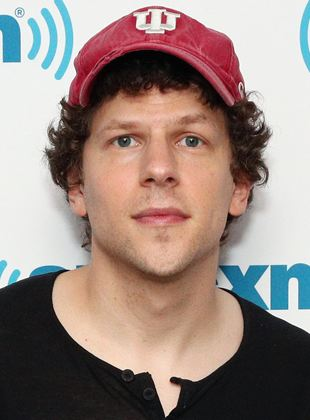
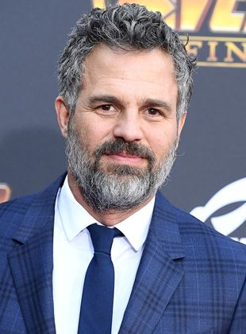
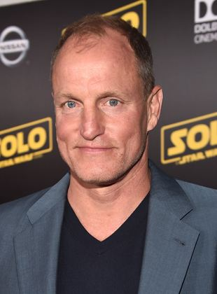
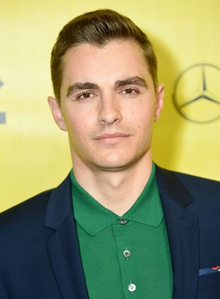
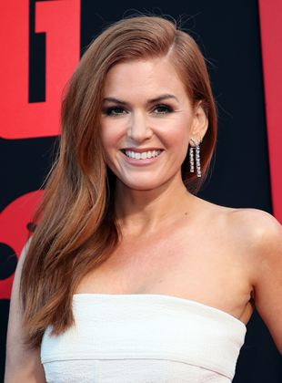
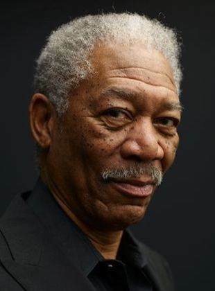
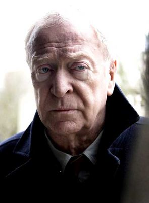
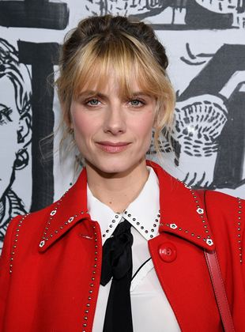

Atividades: Ator, Autor da obra original, Diretor mais
Nome de nascimento: Jesse Adam Eisenberg
Nacionalidade: Americano
Nascimento: 5 de outubro de 1983 (Nova York, Nova York, EUA)
Idade: 38 anos
Eisenberg nasceu no Queens, em Nova York, e cresceu lá e em East Brunswick, Nova Jérsei. Sua mãe, Amy Eisenberg (Amy Fishman, antes de se casar e adotar o nome do marido), que trabalhou como palhaço em festas infantis por 20 anos, atualmente ensina sensibilidade cultural em hospitais.

Atividades: Ator, Produtor Executivo, Coprodutor mais
Nome de nascimento: Mark Alan Ruffalo
Nacionalidade: Americano
Nascimento: 22 de novembro de 1967 (Kenosha, Wisconsin, EUA)
Idade: 54 anos
Apesar de ter um pequeno papel em Ride With The Devil (1999), a primeira participação de destaque de Mark Ruffalo no cinema vem com o premiado drama Conte Comigo (2000). Ele conquista papéis importantes no thriller erótico Em Carne Viva (2003) e no drama Brilho Eterno de uma Mente Sem Lembranças (2004), antes de se lançar em comédias românticas como De Repente 30 (2004) e Dizem Por Aí... (2005). Ele retoma os dramas e suspenses com Zodíaco (2007) e Ensaio Sobre a Cegueira (2008). Em 2010, Martin Scorsese convida-o a atuar em Ilha do Medo, ao lado de Leonardo DiCaprio. Ele recebe sua primeira indicação ao Oscar como ator coadjuvante no drama Minhas Mães e Meu Pai (2010). Um grande passo para o reconhecimento popular vem com o papel de Hulk no grande sucesso Os Vingadores - The Avengers (2012), abrindo a porta para novas produções no papel do monstro gigantesco.

Atividades: Ator, Produtor Executivo, Diretor mais
Nome de nascimento: Woodrow Tracy Harrelson
Nacionalidade: Americano
Nascimento: 23 de julho de 1961 (Midland, Texas - Estados Unidos)
Idade: 60 anos
Woody Harrelson se formou em Artes Cênicas na Hannover College e foi para Nova York trabalhar em teatro. Após breve passagem em NY, o ator foi chamado para integrar o elenco da série de TV Cheers, em 1982, o que tornou Harrelson potencialmente popular. Harrelson estreou nos cinemas na segunda metade da década de 1980.

Atividades: Ator, Produtor, Diretor mais
Nome de nascimento: David John Franco
Nacionalidade: Americano
Nascimento: 12 de junho de 1985 (Palo Alto, Califórnia, EUA)
Idade: 36 anos
Franco nasceu em Palo Alto, California, filho de Betsy (Verne), uma poeta, autora e editora, e Doug Franco, que se conheceram quando eram estudantes da Stanford University. Sua avó materna, Mitzi Levine Verne, fundou a Verne Art Gallery, uma galeria de arte de destaque em Cleveland.

Atividades: Atriz, Produtora Executiva mais
Nome de nascimento: Isla Lang Fisher
Nacionalidades: Australiana, Omanense
Nascimento: 3 de fevereiro de 1976 (Muscate, Omã)
Idade: 46 anos
Isla Lang Fisher (Mascate, 3 de fevereiro de 1976) é uma atriz, dubladora e autora australiana, que começou sua carreira na televisão australiana. Ela nasceu em Omã e cresceu em Perth, Austrália. Ela apareceu na novela Paradise Beach antes de trabalhar como Shannon Reed na novela Home and Away.

Atividades: Ator, Produtor de set, Produtor Executivo mais
Nome de nascimento: Morgan Porterfield Freeman Junior
Nacionalidades: Americano
Nascimento: 1 de junho de 1937 (Memphis, Tennesee, EUA)
Idade: 84 anos
Morgan Freeman (1937) é um ator, produtor, diretor, dublador e narrador norte americano, um dos mais admirados atores das últimas décadas. Morgan Porterfield Freeman Jr. (1937) nasceu em Memphis, Tennessee, no dia 1 de junho de 1937.

Atividades: Ator, Produtor, Intérprete (músicas do filme) mais
Nome de nascimento: Maurice Joseph Micklewhite Junior
Nacionalidades: Britânico
Nascimento: 14 de março de 1933 (Bermondsey, Londres, Inglaterra)
Idade: 89 anos
Michael Caine serviu o Exército Britânico na Guerra da Coreia, nos anos cinquenta. Estreou no cinema com o filme A Hill in Korea, de 1956, no qual interpreta um cabo do exército britânico. Seu primeiro papel de destaque no cinema foi no filme Zulu, de 1964, dirigido por Cy Endfield. Caine ficou popular em uma série de filmes realizados nos anos sessenta, no auge da Guerra Fria, nos quais ele interpretou um espião inteligente e racional chamado Harry Palmer.Caine foi nominado para cinco Óscars, sendo que ele e Jack Nicholson são os únicos atores a terem sido nominados a um Óscar de atuação em cada uma das últimas cinco décadas (situação em 2007). Além deste, outro feito de Caine é estar presente em mais de cem filmes ao longo de sua carreira.

Atividades: Atriz, Diretora, Roteirista mais
Nome de nascimento: Mélanie Laurent
Nacionalidades: Francesa
Nascimento: 21 de fevereiro de 1983 (Paris, França)
Idade: 39 anos
- Filha de mãe professora de balé e pai cantor;- Dirigiu o curta "Mois en Moins", selecionado para a mostra de curta-metragens no Festival de Cannes de 2008;- Teve um longo relacionamento com o ator francês Julien Boisselier.